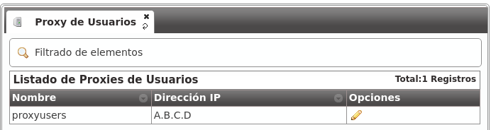
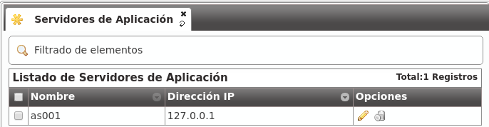
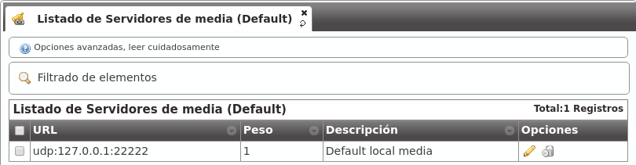
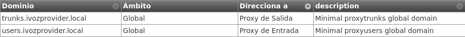

Gestión General¶
Importante
Cualquiera de las 2 IPs públicas configuradas en la instalación servirá para acceder al panel web. Las credenciales por defecto son admin / changeme.
En esta sección haremos referencia a todo lo relativo al rol operador global, configurable en el bloque Gestión general del panel web (solo visible para God):

Configuración personalizada en la instalación¶
En el proceso de instalación se pregunta al administrador dos direcciones IP, con el fin de arrancar los siguientes 2 procesos:
Proxy de Usuarios¶
Es el proxy SIP expuesto al mundo exterior al que se registran los terminalesde los usuarios.
El valor mostrado en la sección Proxy de Usuarios reflejará la IP introducida en el proceso de instalación.
Proxy de Salida¶
Es el proxy SIP expuesto al mundo exterior al que hablarán los Operadores IP con los que el operador de marca decida hacer peering.
El valor mostrado en la sección Proxy de Salida reflejará la IP introducida en el proceso de instalación.

Nota
Solo se explicita la dirección IP, ya que el puerto siempre será 5060 (5061 para SIP sobre TLS).
Peligro
Estos 2 valores pueden editarse desde la web, pero siempre tienen que tener la dirección IP a la que escuchan dichos procesos.
Configuración global estándar¶
El proceso de instalación incluye otros valores globales que son iguales en toda instalación de IvozProvider (standalone) y que también se pueden ver desde la interfaz web.
Servidores de aplicación¶
En la sección Servidores de Aplicación se listan las direcciones IP donde escuchan los distintos Asterisk que componen la solución que, tal y como se ha mencionado, escalan horizontalmente para adaptarse a la carga de la plataforma.
A diferencia de los Proxies, estos Asterisk no están expuestos al exterior, porlo que en una instalación standalone solo habrá uno y escuchará en 127.0.0.1.
Nota
El puerto en el que escuchan no se recoge en el campo, ya que siempre será 6060 (UDP).
Importante
Desde el momento en el que se añade otro Servidor de Aplicación, se intentará contar con él a la hora de repartir la carga. Si éste no responde, se desactivará automáticamente.
Servidores de Media¶
Los media-relays son los que mueven el tráfico RTP en una llamada establecida y, al igual que ocurre con los Servidores de Aplicación, permiten un escalado horizontal para adaptarse a la carga de la plataforma.
Los media-relays se organizan en grupos con el fin de poder asignar un grupo concreto a una empresa concreta. Cada elemento del grupo tiene una métrica (peso) que permite repartos de carga desiguales dentro de un mismo grupo (por ej.media-relay1 métrica 1; media-relay2 métrica 2: media-relay2 gestionará el audio del doble de llamadas que media-relay1).
Consejo
La asignación de grupos de media-relays concretos a empresas concretas permite asignar recursos estáticos a empresas que requieren tener garantizado unos recursos concretos. Pero, lo más útil de este tipo de configuración es que estos grupos de media-relays pueden estar en ubicaciones geográficas cercanas al emplazamiento de la empresa (y lejanas al resto de la plataforma) para reducir las latencias en sus conversaciones.
En una instalación standalone, no obstante, solo existe un grupo de media-relays:

Por defecto, este grupo solo contiene un media-relay:
Nota
La dirección que aparece es la dirección del socket de control, no la dirección que se acaba incluyendo en los SDPs de negociación de sesión. Por defecto, este único media-relay utiliza la misma IP que el Proxy de Usuarios.
Dominios SIP¶
En la sección Dominios se muestran los dominios SIP que apuntan a las 2 IPs públicas:
IP de Proxy de Usuarios
IP de Proxy de Salida
Tras una instalación inicial existen 2 dominios, uno para cada una de esas 2 IPs:
Estos dominios se utilizan internamente y el servidor de DNS incorporado en la solución los resuelve a las IPs concretas.
Atención
Tal y como se verá en la sección Dominio SIP de la compañía, cada compañía necesitará un DNS que apunte a la IP del Proxy de Usuarios. Una vez configurado, el dominio aparecerá en esta sección para que el operador global sepa los dominios configurados para cada empresa de un vistazo.
Marcas¶
Tras la instalación inicial, la plataforma incluye una marca pre-creada llamada DemoBrand. Inspeccionemos sus parámetros:
- Nombre
Configura el nombre de esta marca.
- NIF
Número empleado en las facturas de la marca.
- Logo
Empleado como logo por defecto en las facturas y portales (si no se especifica otro logo).
- Datos de facturación
Información incluida en las facturas creadas por esta marca.
- Información de notificaciones
Nombre y dirección origen empleada en los emails de notificación enviados por esta marca (faxes, voicemail, etc.)
- Dominio SIP
Introducido en 1.4. Configura el dominio que apuntará al proxy SIP de usuarios empleado por todas las cuentas Retail de esta marca.
- Grabaciones
Configura el límite de espacio de grabaciones para esta marca. Se enviará una notificación cuando el espacio ocupado alcance el 80% y las grabaciones más antiguas serán rotadas cuando se alcance el límte configurado.
- Features
Introducido en 1.3, permite al administrador global elegir las feature de la marca recién creada. Existe una configuración similar en Compañías, para elegir entre las que el administrador global ha habilitado a la marca. Se habilitarán o deshabilitarán secciones en función de esta configuración.
Consejo
Algunas features (actualmente facturas y tarificación) estan relacionadas con las marcas y no pueden ser asignadas a compañías. El resto de features estan relacionadas con compañías y el propio administrador de marca podrá asignarlas a sus compañías.
Advertencia
Deshabilitar la tarificación ocultará las secciones relacionadas y asumirá que un elemento externo se encargá de poner precios a cada llamada (requerirá un módulo de tarificación externa, ¡pídelo!).
Nota
Deshabilitar facturas ocultará las secciones relacionadas y asumirá que un elemento externo se encargará de generar las facturas.
Emular la marca Demo¶
Como mencionamos anteriormente, tras la instalación inicial, la plataforma incluye una marca pre-creada llamada DemoBrand, que es la que utilizaremos para el fin que nos ocupa: tener 2 teléfonos registrados y que se puedan llamar entre sí.
Antes de pasar a la siguiente sección, es importante entender el concepto de Emular una marca:
Como operador global, tienes acceso al bloque Gestión general, que solo ve God.
Aparte de ese bloque, también ves los bloques Configuración de marca y Configuración de empresa que tienen este aspecto:

Atención especial al siguiente botón:
Una vez pulsado, muestra una ventana flotante tal que:

Al seleccionar la marca DemoBrand, el icono cambia y muestra la marca que se está emulando:

La parte superior derecha de la página también muestra la marca que se está emulando:

¿Qué implica esta emulación?¶
Que todo lo que se ve en el bloque ‘Configuración de marca’ es relativo a esa marca y es exactamente lo mismo que lo que ve el operador de marca cuando entra con sus credenciales de acceso.
Truco
Decir exactamente es mucho decir, ya que el operador global ve campos en ciertas secciones del bloque Configuración de marca que el operador de marca no ve. por ej. Al editar una empresa God ve ‘Servidores de media’ y’AS’, que el operador de marca no ve.